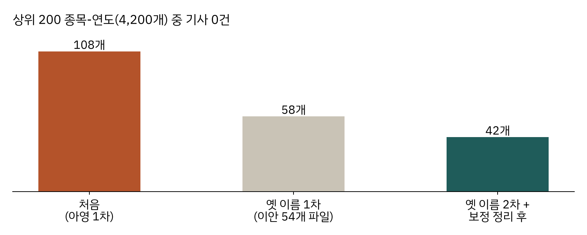
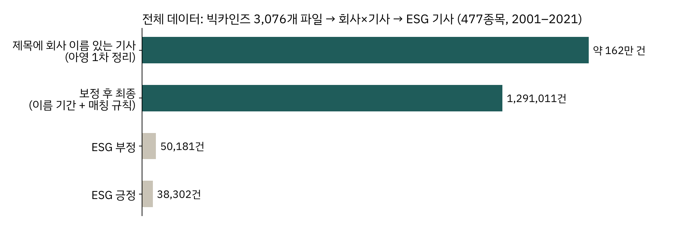
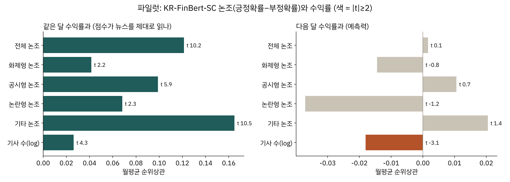
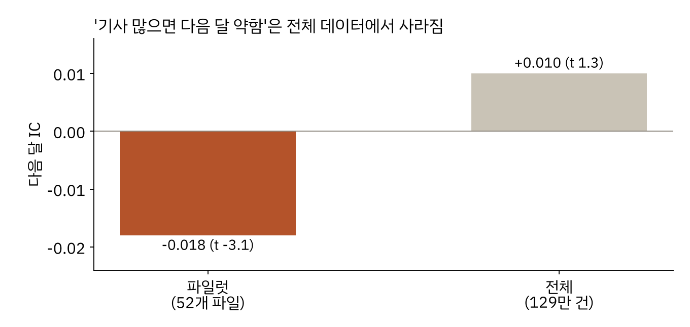
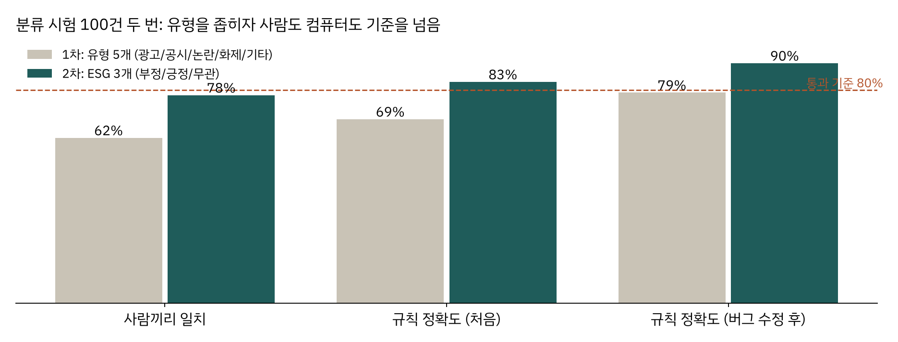
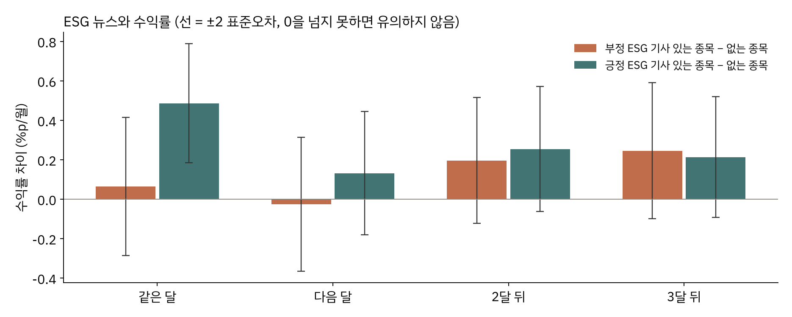

H3는 "화제가 되는 좋은 기사가 나온 종목은 다음 달 수익률이 높다", H4는 "호재 기사 + 개인 순매수가 몰린 종목은 오히려 약하다(설거지)"였다. 기사를 다 섞어 쓰지 않고 유형을 나눈 이유는 기사마다 정보가 주가에 반영되는 속도가 다르다고 봤기 때문이다.
| 유형 | 예 | 처음 계획에서 어떻게 쓰려고 했나 |
|---|---|---|
| 공시형 | 실적 발표, 배당, 증자, 수주 | 공시로 그날 알려져 바로 반영됨 → H3에서 뺌 |
| 화제형 | 신제품, 진출, 제휴, 신사업 | 숫자가 없는 소식이라 늦게 반영될 여지 → H3 핵심 |
| 논란형 | 수사, 소송, 사고 | 따로 봄 |
| 광고 | 사회공헌, 수상, 캠페인 | 회사가 내보낸 홍보 → 뺌 |
| 기타 | 시황, 목표가, 특징주 | 주가를 보고 쓴 기사 → 뺌 |
감성 점수는 금융 뉴스로 학습된 KR-FinBert-SC를 그대로(재학습 없이) 써서 기사마다 s = P(긍정) − P(부정)(−1~+1)을 매기고, 그달 마지막 거래일 당일·이후 기사는 다음 달로 넘겨(미래 정보 차단) 회사×월로 평균 냈다.
수집: 빅카인즈, 언론사 5곳(매경·머투·서경·파뉴·한경), 해마다 시총 상위 200 종목. 이안님 매크로로 수집, 아영님이 정리(중복 제거 → 제목에 회사 이름이 있는 기사만 그 회사에 붙임).

| 문제 | 예 | 해결 |
|---|---|---|
| ① 이름이 겹치는 회사 | 'SK'는 2015-07까지 003600, 2015-08부터 034730. '삼성물산', '오리온', '한국타이어' 등 31개 이름 | 이름마다 쓴 기간을 정한 표(company_list_최종.csv). 날짜 검색으로 확인 |
| ② 옛 이름 시절 기사 0건 | 유수홀딩스 2001–08년 = '한진해운', SK 2010–14년 = 'SK C&C', HL홀딩스 = '만도' | 옛 이름 찾아서 이안님이 2번 재수집 (17건 + 14건) |
| ③ 제목에서 회사를 잘못 붙임 | 'SK텔'→SK, 'CJ오쇼핑'→CJ, '광고대상'→대상, '…목표가↑-대우' 리포트 꼬리표→대우, 야구단 '두산' | 매칭 규칙(match_rules.py): 이름 앞뒤에 붙는 글자, 리포트 꼬리표, 일반 단어 이름을 걸러냄. 파일럿에서 잘못 붙은 19% 제거 |
| ④ 정리 코드에 ①·③이 빠짐 | 회사 목록을 4열로 바꾸면서 이름 기간이 사라짐 / 팀 코드는 영문 경계만 확인 | 보정 함수 2개(아영_정리보정.py)를 끼워 넣고 다시 정리 |

왼쪽: 아영님 정리 방식을 파일럿 기사에 그대로 돌려 비교한 결과. 오른쪽: 남은 42개는 상장 직전·직후나 기사가 원래 거의 없는 소형 회사.
정리본 전체(686MB)는 드라이브 도구 한도(10MB) 때문에 바로 못 가져와서, 같은 원자료 중 10MB 미만 파일 52개(2001–2021, 담당 1~4 고르게)로 처음부터 같은 절차를 돌렸다: 32만 건 → 정리 27만 → 회사 매칭 → 광고 뺀 9.3만 건 점수(CPU 94분).

| 확인한 것 | 같은 달 IC (t) | 다음 달 IC (t) | 뜻 |
|---|---|---|---|
| 전체 논조 | 0.121 (10.2) | 0.002 (0.1) | 점수는 기사를 제대로 읽음. 예측력은 없음 |
| 화제형 논조 (H3 정의) | 0.042 (2.2) | −0.014 (−0.8) | 화제형은 거의 다 긍정이라 종목끼리 차이가 안 남 |
| 주가 보도 기사 뺀 논조 | 0.076 (6.3) | −0.008 (−0.6) | '주가가 기사를 만든' 몫을 빼도 같은 달 관계는 남음 |
| 월말 2주 기사만 | 0.113 (8.2) | 0.010 (0.7) | 늦은 소식도 다음 달로 안 이어짐 |
| 평소 대비 논조 변화 | 0.111 (9.4) | 0.000 (0.0) | 변화로 바꿔도 같음 |
| 강한 부정 / 강한 긍정 비율 | −0.086 / 0.091 | 0.002 / 0.002 | 평균 대신 비율로 해도 같음 |
논조 3분위로 보면 같은 달엔 상−하 +3.35%p/월 (t 7.9), 다음 달엔 −0.08%p (t −0.2). 9개 통제를 넣은 Fama-MacBeth에서도 논조 계수는 0 근처(t −0.2).
파일럿에선 기사가 많이 나온 종목이 다음 달에 약했다(관심 효과 후보). 아영님 전체 기사 수로 다시 보니 사라졌다. 파일럿 52개 파일이 회사·연도를 고르게 덮지 못한 데서 생긴 편향이었다.

방법: 기간 4구간 × 25건, 회사당 최대 3건, 기사 원문에 답을 숨긴 시험지 2부 → 예원·아영님이 서로 안 보고 정답 → 컴퓨터(키워드 규칙)와 비교. 통과 기준: 사람 최종 정답 대비 규칙 일치 80% 이상, 화제형 정밀도 확인. 떨어지면 키워드를 고치고 새 100건으로 다시(같은 100건으로 다시 재면 점수가 부풀려짐).
| 결과 | 값 |
|---|---|
| 사람끼리 일치 | 62% (카파 0.47) |
| 규칙 v1 (두 사람 합의 62건 기준) | 69% |
| 규칙 v2 (리포트 꼬리표·목표가·회사 이름 속 낱말 버그 수정) | 79% (같은 표본이라 부풀려진 값) |
| 화제형 정밀도 / 재현율 | 44% / 67% |
안 된 이유는 규칙보다 정의였다. 많이 갈린 조합: 기타 vs 화제형 11건, 공시형 vs 기타 7건, 광고 vs 화제형 6건, 광고 vs 기타 6건.
| 기사 예 | 갈린 답 | 왜 애매한가 |
|---|---|---|
| 현대증권, 원금 98% 보장형 ELS 공모 | 광고 vs 화제형 | 신상품 출시는 홍보인가 사업 소식인가 |
| 신세계, 5월 실적호조 목표가↑-대신證 | 공시형 vs 기타 | 실적 얘기지만 증권사 전망 |
| 현대중공업 지분 540만주 현대상선 연내 매각키로 | 공시형 vs 화제형 | 결정인가 계획인가 |
| 수주·공급계약을 따냄 / 실적이 나쁨 | 공시형 vs 화제형 / 공시형 vs 논란형 | 좋다·나쁘다를 유형에 섞으면 겹침 |
그래서 ① '질문 순서표'(주인공인가 → 주가 얘기인가 → 사건인가 → 확정 사실인가 → 새 사업인가 → 홍보인가)로 바꾸고 ② "유형은 정보 종류, 좋고 나쁨은 감성 점수가 맡는다"로 나누는 안을 만들었다. 하지만 이 상태로는 라벨링 → 규칙 수정 → 재시험을 몇 번 더 돌려야 했다.
| 바꾸기 전 | 바꾼 뒤 | |
|---|---|---|
| H3 | 화제형 기사 논조가 좋으면 다음 달 수익률 + | H3' ESG 부정 사건이 있는 종목은 다음 달(그리고 2~3달 뒤) 수익률 −, ESG 순지표가 높을수록 + |
| H4 | 호재 + 개인 순매수 → 더 약함 | H4' (a) 덮기: 부정 사건이 있는 달에 홍보 기사도 있으면 덜 떨어지나 (b) 부정 사건 종목을 개인이 많이 사면 더 약한가 |
| 판정 | 결과를 보기 전에 고정: 있음−없음 차이 t≤−2, 또는 Fama-MacBeth(통제 9개) t≥2(방향 맞게), XGBoost 4단계 IC 증가 | |
2~3달 뒤까지 본 이유: 사건·사고는 피해 규모를 바로 알기 어려워 늦게 반영될 수 있다는 것이 이 가설의 논리라서.
| ① | 주가·투자 기사 (목표가, 특징주, 급등, '-○○증권') | 무관 |
|---|---|---|
| ② | 스포츠·대회 기사, 스포츠·행사 후원 | 무관 |
| ③ | 회사에 유리한 판결 (승소, 무죄, 무혐의) | 무관 |
| ④ | 재난 성금·기부 기사 ('시장 화재 1억 성금') | 긍정 |
| ⑤ | 부정 키워드 (횡령, 수사, 과징금, 산재, 파업, 리콜, 오염 …) | 부정 |
| ⑥ | 긍정 키워드 (기부, 봉사, 상생, 친환경, ESG 등급 …) | 긍정 |
| ⑦ | 나머지 (실적, 공시, 신제품, 인사) | 무관 |
시험지는 일부러 규칙 기준으로 섞어 뽑았다: 규칙이 부정이라 한 것 35 · 긍정 35 · 무관 30(그중 15건은 본문에 ESG 단어가 있어 놓쳤을 수 있는 기사). 무작위로 뽑으면 ESG 기사가 100건 중 6건뿐이라 정밀도를 잴 수 없어서다. 두 사람이 다르게 단 22건은 팀 기준 5줄(스포츠 후원은 무관, 진행 중인 수사·소송도 부정, 제품 이름 속 단어는 무관, 직원 개인 인터뷰는 무관, 제품 수상은 무관)로 영섭이 최종 결정.

| 최종 정답 100건 기준 | 규칙 v1 (첫 분석) | 규칙 v1.1 (최종) |
|---|---|---|
| 전체 정확도 | 83% | 90% |
| 부정이라 한 것 중 진짜 부정 (정밀도) | 83% | 85% |
| 긍정이라 한 것 중 진짜 긍정 (정밀도) | 80% | 97% |
| 진짜 부정·긍정 중 찾아낸 비율 (재현율) | 94% / 93% | 94% / 93% |
부정↔긍정을 서로 바꿔 단 건 0건. 틀린 건 모두 무관과의 경계. v1.1은 같은 100건을 보고 버그만 고친 것이라 90%는 약간 높게 나왔을 수 있음.

| 검정 | 결과 | 판정 |
|---|---|---|
| 부정 ESG 있음−없음, 다음 달 | −0.03%p (t −0.2). 같은 달도 +0.07 (t 0.4) | 반응 없음 |
| 긍정 ESG 있음−없음 | 같은 달 +0.49%p (t 3.2) → 다음 달 +0.13 (t 0.8) | 같은 달에만 |
| IC: ESG 순지표 / 긍정 있음, 다음 달 | 0.003 (t 0.4) / 0.010 (t 2.0) | 긍정은 아래에서 사라짐 |
| Fama-MacBeth (통제 9개 + 부정·긍정) | 부정 +0.03%p (t 0.3), 긍정 +0.11%p (t 0.8) | 유의하지 않음 |
| XGBoost 3단계 → 4단계(+ESG) | IC 0.0298 → 0.0292, 나은 해 6/11 | 개선 없음 |
| H4'(a) 덮기: 부정 종목 중 홍보 있음−없음 | +0.04%p (t 0.1) | 효과 없음 |
| H4'(b) 부정 종목 개인 많음−적음 (차이의 차이) | −0.19%p (t −0.7) | 방향만 맞음 |
긍정 ESG의 '다음 달 IC t 2.0'은 통제를 넣으면 사라진다: 큰 회사가 홍보 기사를 많이 내서 생긴 착시. 규칙 v1과 v1.1 결과는 거의 같았다.
한계: 상위 200 대형주만 봄 / 제목만 보고 분류 / 사건의 크기(피해액, 보도량 급증)는 반영 못 함 / ESG 기사의 감성 점수는 디스크 문제로 이번엔 건너뜀(있음·없음부터 효과가 0이라 결론이 바뀌기 어려움).
교수님께 여쭐 것: 이 결과로 정리해도 되는지, 아니면 작은 종목·큰 사건(보도량 급증)만 따로 볼지.
코드·결과: 깃 claude/gracious-fermat-5vr5w2 브랜치 연습장/news (match_rules.py, esg_rules.py, 영섭_ESG_VSCode.py, esg_analysis.py), 연습장/out/news_pilot, news_full200, news_esg_full_v11. 기사 원문은 깃에 올리지 않음.